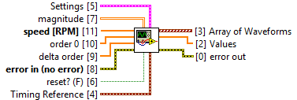
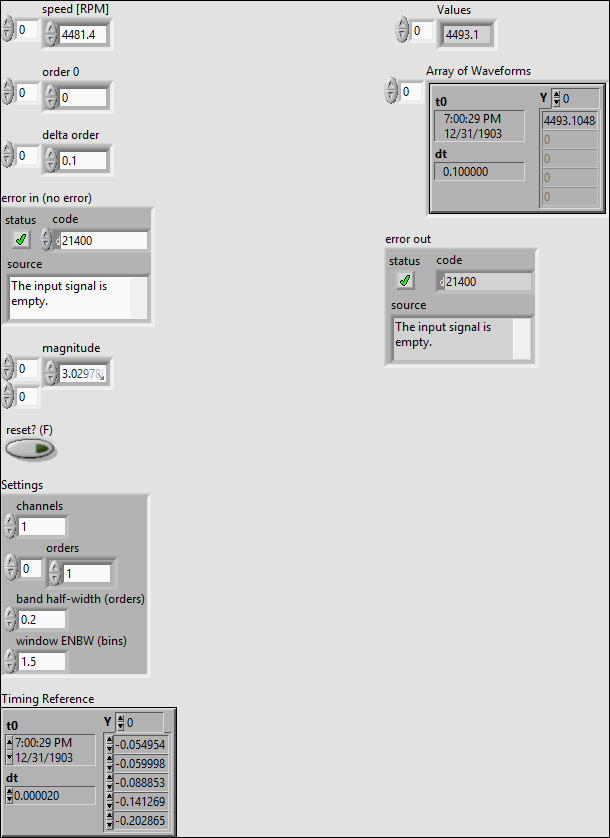
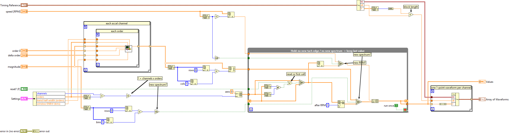

Turns the outputs of the order power spectrum example into FlexLogger channels: RPM plus one order amplitude (EU rms) per accel channel and per order.
Inputs come straight from the example diagram:
- speed [RPM]: the speed profile speed array of this block (OAT Analog Tacho Process). RPM = its last point.
- order 0 / delta order / magnitude: the order power spectra unbundled in a For Loop (one element or row per accel channel). magnitude must be LINEAR power (dB on? = FALSE on OAT Order Power Spectrum).
Order amplitude = sqrt( sum of the magnitude bins within order +/- band half-width / window ENBW ). ENBW = 1.5 for Hanning. This is the same math as SVFA Power in Band.
Output Array of Waveforms (to Write 1D Wfm with Auto Calculate T0 = TRUE): one 1-point waveform per channel with t0 = block t0 and dt = block length, in this order:
RPM, then for accel channel 0 one amplitude per order, then channel 1, and so on.
Initialize must create the same channels in the same order: 1 + channels x orders.
No new tach edges or no new spectrum in a block (empty arrays) -> the last values are repeated (the While Loop shift register keeps them between calls, so this VI must stay preallocated reentrant). Every channel is written every block. Before the first result the values are 0.
channels in Settings must equal the number of accel channels in the spectra.
reset? TRUE on the first Process call after Configure Session.


